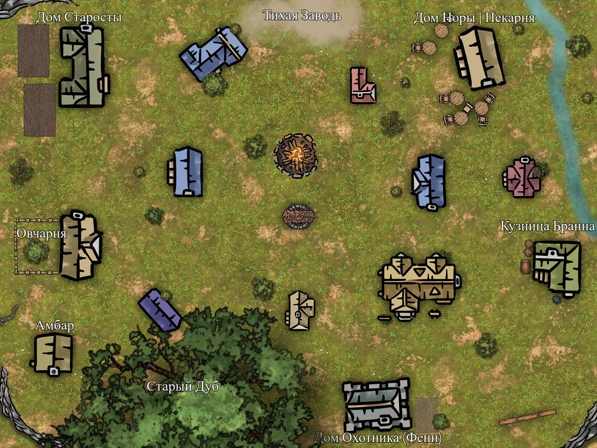

Тихая Заводь
Стартовая деревня

Общее описание
Население: около 80–90 человек (20 дворов).
Основа экономики: лесозаготовки, охота, овцеводство, маленькая кузница.
Атмосфера: уютная бедность. Здесь не голодают, но и не жируют. Все друг друга знают. Незнакомец — событие. По вечерам пахнет дымом, хлебом и немного сыростью из леса.
Жители
1. Староста Корвин
Кто: мужчина 60 лет, седой, сухощавый, с глубокими морщинами. Глаза добрые, но уставшие. Ходит с тростью — старая рана на ноге. Говорит мало, но весомо.
Роль: формальный лидер деревни. Решает споры, распределяет запасы, ведёт переговоры с редкими торговцами.
Характер: спокойный, справедливый, фаталистичный. Он знает, что деревня стоит «на плохом месте», но не знает деталей.
2. Травница Морвен
Кто: женщина, на вид — 60–70 лет. Сгорбленная. Волосы — седые завязаны в узел на затылке. Всегда носит плащ с капюшоном, даже в тепле. Живёт одна в Хижине Травницы, в часе ходьбы от деревни.
Роль: целительница. Лечит травами, принимает роды, ухаживает за больными. Бесплатно. Все её любят и уважают.
3. Кузнец Бранн
Кто: дварф, 50 лет. Единственный дварф в деревне. Кряжистый, с рыжей бородой, прокопчённый дымом горна.
Роль: кузнец, механик, ремонтник всего, что ломается.
Характер: ворчливый перфекционист. Мало говорит, но когда говорит — по делу. Недолюбливает Немую Церковь («слишком много болтают о тишине»), но вслух не критикует. Скучает по своему народу, но никогда этого не показывает.
4. Хозяйка Пекарни Нора
Кто: женщина 35 лет, мать-одиночка. У неё сын, Томин (8 лет).
Роль: печёт хлеб на всю деревню. Её пекарня — неформальный центр общения. К ней заходят за хлебом и за новостями.
Характер: добрая, болтливая, немного тревожная. Любит сына больше жизни. Первая замечает странности: мука в мешках иногда шевелится сама по себе, а молоко скисает за час, хотя погреб холодный.
5. Охотник Фенн
Кто: мужчина 25 лет, поджарый, с вечно настороженным взглядом. Носит старый кожаный доспех. Живёт на окраине, ближе к лесу.
Роль: главный охотник и следопыт деревни. Снабжает дичью, знает лес как свои пять пальцев. Единственный, кто ходит в Глухомань дальше опушки.
Характер: молчаливый, независимый, с тёмным чувством юмора. В деревне его уважают, но побаиваются — «слишком долго один в лесу». Пьёт по вечерам, но никогда не напивается до беспамятства.
6. Бригадир Марта
Кто: женщина 40 лет, крепкая, с обветренным лицом и сильными руками. Руководит бригадой лесорубов в Лагере (полдня пути от деревни).
Роль: главная по лесозаготовкам. Приходит в деревню раз в неделю — отчитаться перед Старостой, пополнить припасы, набрать работников.
Характер: грубая, прямолинейная, заботливая по-своему. Стукнет по плечу так, что синяк останется, но первой встанет на защиту своих людей. Не верит в «шепотки и туманы», доверяет только топору и собственным рукам.
7. Сын Норы — Томин
Кто: мальчик 8 лет. Худой, с большими серыми глазами. Любит рисовать палочкой на земле и играть у Старого Дуба.
Характер: тихий, мечтательный. Говорит странные вещи. Может сказать: «Дядя, а ты тоже слышишь, как земля дышит?» или «Тётя Морвен говорит, что я особенный, но маме это не нравится».